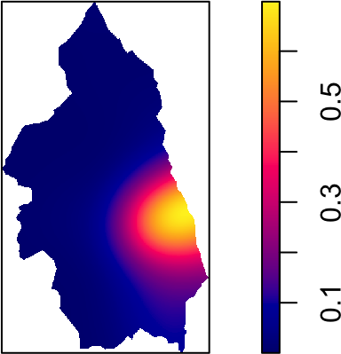

int_controls <-density(controls, sigma = bw, eps=0.25)plot(int_controls, main =NULL)
Code
int_cases <-density(cases, sigma = bw, eps=0.25)plot(int_cases, main =NULL)

Visualizing Relative Risk Surface
All that’s left is \(\alpha = \# \text{Controls} / \# \text{Cases}\)!
Code
library(fields)
Loading required package: spam
Spam version 2.10-0 (2023-10-23) is loaded.
Type 'help( Spam)' or 'demo( spam)' for a short introduction
and overview of this package.
Help for individual functions is also obtained by adding the
suffix '.spam' to the function name, e.g. 'help( chol.spam)'.
Attaching package: 'spam'
The following objects are masked from 'package:base':
backsolve, forwardsolve
Loading required package: viridisLite
Try help(fields) to get started.
Attaching package: 'fields'
The following object is masked from 'package:leaflet':
addLegend
Code
(alpha_hat <- cases$n/controls$n)
[1] 0.2519868
Code
x <- int_cases$xcoly <- int_cases$yrowrr <-t(int_cases$v)/t(alpha_hat * int_controls$v)image.plot(x, y, rr, asp =1)title(xlab ="Easting", ylab ="Northing")
From Exploratory to Confirmatory Data Analysis
How do we know whether this raised risk around North Newcastle could be attributed to “chance”? Maybe relative risk is actually constant, and people in Newcastle are just unlucky…